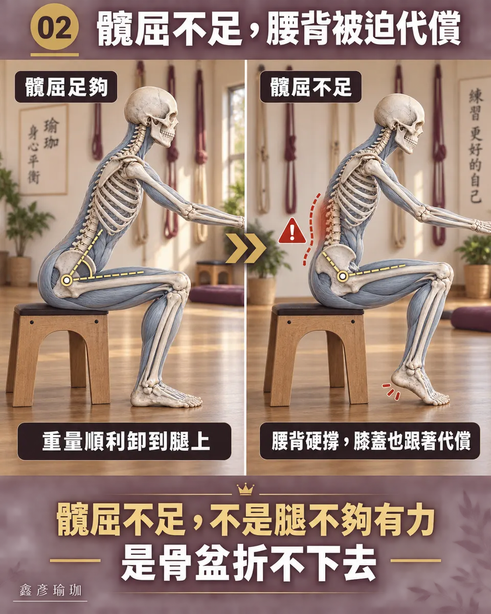

蹲下去、站起來有點吃力？深蹲活動度受限與日常起臥動力鏈的深層解析
下班蹲到玄關找鞋，腳跟一翹，膝蓋就卡住。想站回來，手已經先去摸鞋櫃。
深蹲要靠髖、膝與踝一起分配角度。腳跟先浮起，有時是踝往前的幅度有限，身體改用前傾或抬跟找重心。先扶穩固桌面，用約 3 秒蹲到舒服的淺幅度，記下腳跟何時離地。結果會受站距、鞋子與身體比例影響，不能用來判斷關節病變。
深蹲蹲不下去，為什麼腳跟會抬起來？
教室觀察。我們在教室會比較同一個人扶著支點與徒手時的淺蹲，看看哪種條件下腳底更容易踩穩。
一般運動衛教。距離、站距與深度都會改變踝、膝和髖分擔的角度。腳跟抬起也可能只是某個蹲法的策略。

怎麼在家觀察起身和下蹲？
👆 手機可左右滑動
| 看到的狀況 | 可以怎麼觀察 | 無法據此判定 |
|---|---|---|
| 腳跟先浮 | 縮小蹲幅，留意腳跟還能貼地到哪裡。 | 腳踝活動度的診斷 |
| 快坐到底突然落下 | 改用較高的穩固椅子，觀察最後一小段能否放慢。 | 某條肌肉無力 |
| 起來先扯腰 | 用桌面輕扶，觀察腳底與臀腿的出力感是否改變。 | 腰或膝蓋有損傷 |
膝碰牆時，腳跟有沒有跟著抬起？
影片文字摘錄（畫面）
鏡頭先拍腳跟離地，再並排呈現兩次靠牆屈膝的站位。觀察的是相同動作中腳跟是否持續接觸地面。
膝蓋突然無法彎伸、明顯紅腫或無法負重時，先停止練習並就醫。
常見問題
蹲下去時腳跟總是不自覺浮起，代表哪裡出現問題？
腳跟離地可提示留意踝活動，也會受蹲深與重心影響。
為什麼深蹲蹲到最深處時，屁股會不自覺往內縮（骨盆眨眼）？
蹲深時骨盆向後轉可能與深度和站姿有關，單靠畫面無法判斷夾擠。
年紀增長後蹲下站起愈來愈吃力，主要是膝蓋退化引起的嗎？
年齡、活動習慣、肌力及疼痛都可能影響起身，不能只歸因於膝蓋。
壁繩瑜珈如何幫助找回安全、無痛的深蹲活動度？
壁繩多提供一個可扶的支點，可從淺幅度練習。
下蹲或起立時出現哪些警訊，必須立即停止練習並就醫排查？
若有明顯紅腫、卡住無法彎伸或突然無法負重，停止練習並就醫。
想把剛才的觀察整理成下一步？開始免費體態訊號掃描，從最困擾的日常動作填起。